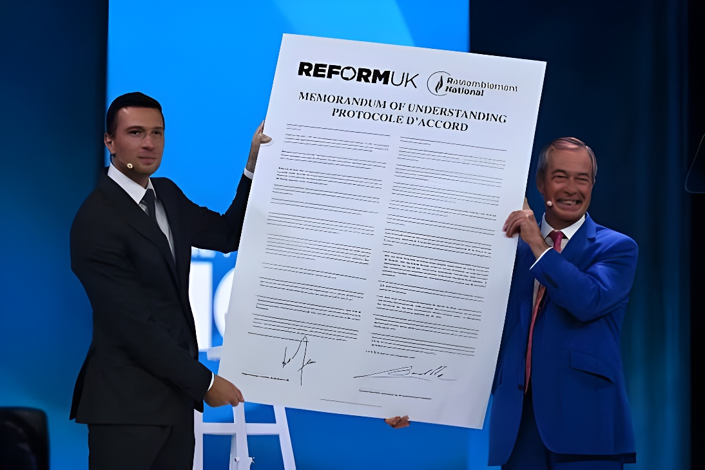

Le 4 septembre 2026, à l'occasion du congrès annuel de Reform UK à Birmingham, Nigel Farage et Jordan Bardella ont signé un protocole d'accord sur les traversées clandestines de la Manche, officialisant un rapprochement engagé depuis plusieurs mois entre les deux partis d'extrême droite, tous deux en tête des sondages dans leurs pays respectifs.
Devant les militants réunis au National Exhibition Centre (NEC) de Birmingham, Nigel Farage, chef de Reform UK, et Jordan Bardella, président du Rassemblement national, ont signé sur scène un « protocole d'accord » (Memorandum of Understanding) engageant leurs deux partis, à condition qu'ils accèdent simultanément au pouvoir au Royaume-Uni et en France. Le texte prévoit que la France « fasse tout son possible pour empêcher tous les départs » de migrants clandestins depuis ses côtes, et que le Royaume-Uni puisse intercepter dans ses eaux territoriales les embarcations concernées afin de renvoyer leurs occupants vers la France, qui s'engagerait alors à organiser leur retour vers leur pays d'origine. Nigel Farage a salué la signature de ce texte comme une « nouvelle entente cordiale » entre les deux pays.
Jordan Bardella a présenté cette signature comme l'aboutissement de « plusieurs mois d'échanges et d'une coopération qui a commencé en décembre dernier entre deux partis capables d'arriver au pouvoir ». Invité d'honneur du congrès, il a prononcé un discours d'une vingtaine de minutes intégralement en anglais, dans lequel il a vivement mis en cause le président Emmanuel Macron, l'accusant d'avoir « échoué à protéger la France » face à l'immigration, et affirmant que le défi commun aux deux pays était de « reprendre le contrôle » de leurs frontières. Il a par ailleurs évoqué une amitié naissante entre les deux peuples, en dépit d'une rivalité historique entre la France et le Royaume-Uni.
Premiers échanges entre Reform UK et le Rassemblement national autour de la question migratoire, selon Jordan Bardella.
Reform UK réalise une percée historique aux élections locales britanniques, avec plus de 1 450 sièges gagnés.
La cour d'appel de Paris réduit la peine d'inéligibilité de Marine Le Pen, qui reste candidate potentielle à la présidentielle de 2027.
Nigel Farage est réélu député de Clacton lors d'une élection partielle qu'il a lui-même provoquée, avec 63 % des voix face à 34 candidats.
Reform UK annonce la venue de Jordan Bardella à son congrès annuel de Birmingham.
Channel 4 News diffuse une enquête sous couverture mettant en cause des cadres de Reform UK pour soupçons de dons étrangers illégaux.
Démission de deux proches de Nigel Farage, ouverture du congrès de Birmingham et signature du protocole d'accord entre Farage et Bardella.
La signature du protocole intervient dans un climat troublé pour Reform UK. La veille au soir, la chaîne Channel 4 News a diffusé, en collaboration avec la société Verbatim Media, les résultats d'une enquête sous couverture montrant des responsables du parti évoquer des dons provenant d'un donateur étranger, ce qui est illégal au regard du droit électoral britannique. Dès le lendemain, deux proches de Nigel Farage, James Orr et Dan Jukes, ont démissionné de leurs fonctions. Reform UK a dénoncé un coup monté par des « militants de la cause climatique financés par l'étranger », tout en annonçant l'ouverture d'une enquête interne. Le congrès s'est par ailleurs tenu sous surveillance policière renforcée, plusieurs centaines de manifestants opposés au parti s'étant rassemblés à proximité de la salle, certains ayant été évacués par les forces de l'ordre.
L'annonce a suscité de vives critiques parmi les adversaires politiques de Jordan Bardella en France, qui lui reprochent d'avoir pris, depuis l'étranger, des engagements sur le sort de migrants sans consultation préalable, tout en rejetant sur le pouvoir en place la responsabilité de la situation migratoire dans le Nord de la France. Ces échanges s'inscrivent dans un climat de tension croissante entre le Rassemblement national et le reste de la classe politique française, à quelques mois d'une échéance présidentielle jugée décisive pour l'avenir du parti.
« Le Royaume-Uni ne doit pas être la destination des immigrés illégaux entrant en France. Ils doivent être renvoyés dans leur pays d'origine. »
— Jordan Bardella, congrès de Reform UK, Birmingham, 4 septembre 2026Au-delà de sa portée symbolique, cet accord illustre la structuration croissante d'un réseau de partis nationalistes et anti-immigration à l'échelle européenne, unis par des intérêts électoraux convergents plutôt que par un projet immédiatement applicable : ni Reform UK ni le Rassemblement national n'exercent aujourd'hui le pouvoir dans leur pays, ce qui prive le protocole signé à Birmingham de toute valeur juridique contraignante. Son calendrier n'est pourtant pas anodin : il intervient alors que Reform UK domine les sondages britanniques et que le Rassemblement national se positionne en vue de la présidentielle française de 2027, dans un congrès par ailleurs fragilisé par des soupçons de financement illégal. L'épisode confirme ainsi que la question migratoire demeure un terrain de ralliement privilégié pour les droites radicales des deux côtés de la Manche, y compris lorsque leurs partis respectifs restent, pour l'heure, dans l'opposition.
On 4 September 2026, at Reform UK's annual conference in Birmingham, Nigel Farage and Jordan Bardella signed a memorandum of understanding on Channel crossings, formalising months of rapprochement between the two far-right parties, both currently leading the polls in their respective countries.
In front of activists gathered at the National Exhibition Centre (NEC) in Birmingham, Reform UK leader Nigel Farage and National Rally president Jordan Bardella signed on stage a memorandum of understanding binding their two parties, conditional on both simultaneously reaching power in the United Kingdom and France. The text states that France would do "everything possible to prevent all departures" of irregular migrants from its coasts, and that the United Kingdom could intercept boats within its territorial waters and return their occupants to France, which would then commit to organising their return to their countries of origin. Nigel Farage hailed the agreement as a "new entente cordiale" between the two countries.
Jordan Bardella presented the signing as the outcome of "several months of talks and cooperation that began last December between two parties capable of reaching power." As guest of honour at the conference, he delivered a twenty-minute speech entirely in English, sharply criticising President Emmanuel Macron, whom he accused of having "failed to protect France" on immigration, and arguing that both countries faced the same challenge of "taking back control" of their borders. He also spoke of a growing friendship between the two peoples, despite a long-standing historical rivalry between France and the United Kingdom.
First contacts between Reform UK and the National Rally on migration policy, according to Jordan Bardella.
Reform UK makes a historic breakthrough in the UK local elections, gaining more than 1,450 council seats.
The Paris Court of Appeal reduces Marine Le Pen's ineligibility sentence, leaving her a potential candidate for 2027.
Nigel Farage is re-elected MP for Clacton in a by-election he himself triggered, winning 63% against 34 candidates.
Reform UK announces that Jordan Bardella will attend its annual conference in Birmingham.
Channel 4 News airs an undercover investigation implicating Reform UK officials in alleged illegal foreign donations.
Two Farage allies resign, the Birmingham conference opens, and Farage and Bardella sign the memorandum.
The signing took place against a troubled backdrop for Reform UK. The previous evening, Channel 4 News, working with production company Verbatim Media, broadcast an undercover investigation showing party officials discussing donations from a foreign donor — illegal under British electoral law. The following day, two figures close to Nigel Farage, James Orr and Dan Jukes, resigned from their posts. Reform UK denounced the report as a stunt orchestrated by "foreign-funded climate activists," while announcing an internal review. The conference was also held under heavy police protection, with several hundred protesters gathering near the venue, some of whom were removed by police.
The announcement drew sharp criticism from Jordan Bardella's political rivals in France, who accused him of making commitments about migrants' fate from abroad without consultation, while placing blame on the current government for the migration situation in northern France. The exchanges reflect growing tension between the National Rally and the rest of the French political class ahead of a presidential election widely seen as decisive for the party's future.
"The UK should not be the destination for illegal immigrants entering France. They must be sent back to their country of origin."
— Jordan Bardella, Reform UK conference, Birmingham, 4 September 2026Beyond its symbolic weight, this agreement illustrates the growing structuring of a network of nationalist, anti-immigration parties across Europe, united by converging electoral interests rather than by an immediately workable project: neither Reform UK nor the National Rally currently holds power in its own country, leaving the Birmingham memorandum without any binding legal force. Its timing is nonetheless significant: it comes as Reform UK leads British polls and as the National Rally positions itself ahead of France's 2027 presidential election, at a conference itself shaken by allegations of illegal funding. The episode confirms that migration remains a favoured rallying ground for the radical right on both sides of the Channel, even while both parties remain, for now, in opposition.